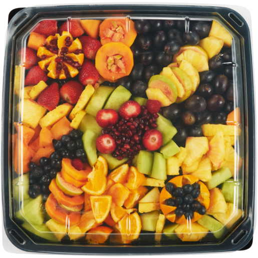

About Us
1956 Our first store opens in Mayfair, Johannesburg. 1950s Checkers counters retail price wars with its affordable House Brands. 1960s We grow from three stores to a chain of 85 stores nationally. 1968 The first ever locally manufactured trolleys are delivered to Checkers stores.

